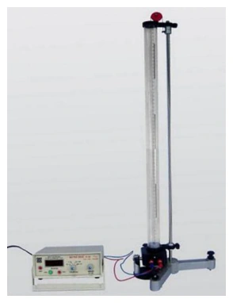
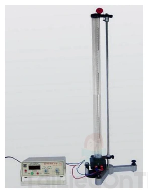
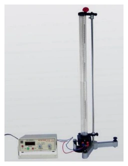
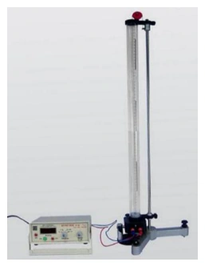
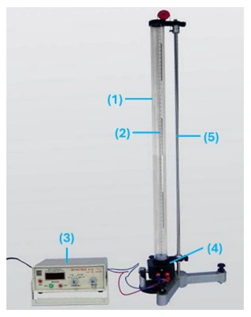
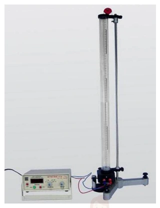
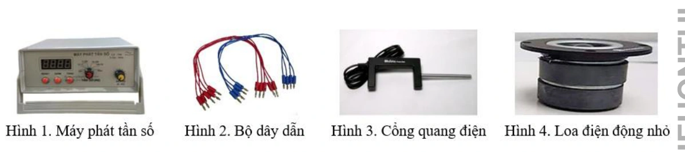

Bài tập — Bài 9 — Thực hành đo tốc độ truyền âm
Phần A — Trắc nghiệm 4 lựa chọn
Bài 1 — Mức 1 — Nhận biết
Đo được bước sóng âm \(0,68\,\mathrm m\) và tần số \(500\,\mathrm{Hz}\). Tốc độ âm là
A. \(250\,\mathrm{m/s}\).
B. \(340\,\mathrm{m/s}\).
C. \(500\,\mathrm{m/s}\).
D. \(680\,\mathrm{m/s}\).
Đáp án và lời giải
Đáp án: B. \(340\,\mathrm{m/s}\).
Hướng dẫn giải:
Dùng \(v=f\lambda\): \(v=500\cdot0{,}68=340\,\mathrm{m/s}\), nên chọn B.
Bài 2 — Mức 1 — Nhận biết
Trong phương pháp cộng hưởng cột khí một đầu kín, chênh lệch giữa hai chiều dài cộng hưởng liên tiếp bằng
A. \(\lambda/4\).
B. \(\lambda/2\).
C. \(\lambda\).
D. \(2\lambda\).
Đáp án và lời giải
Đáp án: B. \(\lambda/2\).
Hướng dẫn giải:
Với cột khí một đầu kín, các chiều dài cộng hưởng liên tiếp sai khác một nửa bước sóng: \(L_{k+1}-L_k=\lambda/2\).
Bài 3 — Mức 1 — Nhận biết
Đo tốc độ âm bằng tiếng vọng: khoảng cách đến vách là \(51\,\mathrm m\), thời gian từ phát đến nghe vọng là \(0,30\,\mathrm s\). Tốc độ âm là
A. \(170\,\mathrm{m/s}\).
B. \(255\,\mathrm{m/s}\).
C. \(340\,\mathrm{m/s}\).
D. \(680\,\mathrm{m/s}\).
Đáp án và lời giải
Đáp án: C. \(340\,\mathrm{m/s}\).
Hướng dẫn giải:
Âm đi từ người đến vách rồi phản xạ trở lại nên quãng đường là \(2d=102\,\mathrm m\). Do đó \(v=2d/\Delta t=102/0{,}30=340\,\mathrm{m/s}\).
Phần B — Đúng/Sai
Bài 4 — Mức 2 — Thông hiểu
Trong thí nghiệm đo tốc độ âm:
a) Có thể dùng \(v=f\lambda\).
b) Nếu dùng tiếng vọng phải tính quãng đường hai chiều.
c) Tần số âm thoa tự thay đổi khi dịch ống cộng hưởng.
d) Nhiệt độ không khí có thể ảnh hưởng kết quả.
Đáp án và lời giải
Đáp án: a) Đúng; b) Đúng; c) Sai; d) Đúng.
Hướng dẫn giải:
a) Đúng. Khi biết bước sóng và tần số, tốc độ truyền âm được tính bằng \(v=f\lambda\).
b) Đúng. Phép đo tiếng vọng dùng thời gian khứ hồi, nên âm đi tổng quãng đường \(2d\).
c) Sai. Dịch pít-tông làm thay đổi chiều dài cột khí và điều kiện cộng hưởng; tần số của nguồn âm thoa không tự đổi vì thao tác đó.
d) Đúng. Tốc độ âm trong không khí phụ thuộc nhiệt độ, nên nhiệt độ là điều kiện cần ghi nhận khi đánh giá kết quả.
Phần C — Trả lời ngắn
Bài 5 — Mức 3 — Vận dụng
Hai vị trí cộng hưởng liên tiếp của cột khí là \(17,2\,\mathrm{cm}\) và \(51,5\,\mathrm{cm}\). Tần số âm thoa \(500\,\mathrm{Hz}\). Tính tốc độ âm.
Đáp án và lời giải
Đáp án: \(343\,\mathrm{m/s}\).
Hướng dẫn giải:
Hai cộng hưởng liên tiếp cách nhau \(\lambda/2\), nên \(\lambda=2(L_2-L_1)=2(51{,}5-17{,}2)=68{,}6\,\mathrm{cm}=0{,}686\,\mathrm m\). Suy ra \(v=f\lambda=500\cdot0{,}686=343\,\mathrm{m/s}\).
Bài 6 — Mức 3 — Vận dụng
Một phép đo tiếng vọng: người đứng cách vách \(85\,\mathrm m\), thời gian nghe vọng \(0,50\,\mathrm s\). Tính tốc độ âm.
Đáp án và lời giải
Đáp án: \(340\,\mathrm{m/s}\).
Hướng dẫn giải:
Âm đi và về nên \(s=2d=170\,\mathrm m\). Vì vậy \(v=s/\Delta t=170/0{,}50=340\,\mathrm{m/s}\).
Bài 7 — Mức 3 — Vận dụng
Một nguồn \(400\,\mathrm{Hz}\) phát âm trong không khí. Đo được khoảng cách giữa hai nút áp suất tương ứng một bước sóng là \(0,86\,\mathrm m\). Tính tốc độ.
Đáp án và lời giải
Đáp án: \(344\,\mathrm{m/s}\).
Hướng dẫn giải:
Khoảng đo đã cho tương ứng một bước sóng nên \(\lambda=0{,}86\,\mathrm m\). Do đó \(v=f\lambda=400\cdot0{,}86=344\,\mathrm{m/s}\).
Phần D — Vận dụng và vận dụng cao
Bài 8 — Mức 4 — Vận dụng cao
Trong thí nghiệm cột khí, ba chiều dài cộng hưởng liên tiếp đo được là \(L_1=16,8\,\mathrm{cm}\), \(L_2=50,9\,\mathrm{cm}\), \(L_3=85,3\,\mathrm{cm}\) với âm thoa \(500\,\mathrm{Hz}\). Hãy lấy trung bình hai hiệu liên tiếp để ước tính tốc độ âm.
Đáp án và lời giải
Đáp án: \(342{,}5\,\mathrm{m/s}\).
Hướng dẫn giải:
Hai hiệu liên tiếp là \(L_2-L_1=34{,}1\,\mathrm{cm}\) và \(L_3-L_2=34{,}4\,\mathrm{cm}\); giá trị trung bình là \(34{,}25\,\mathrm{cm}\). Vì mỗi hiệu bằng \(\lambda/2\), suy ra \(\lambda=68{,}5\,\mathrm{cm}=0{,}685\,\mathrm m\). Vậy \(v=f\lambda=500\cdot0{,}685=342{,}5\,\mathrm{m/s}\). Lấy trung bình nhiều khoảng cộng hưởng giúp giảm ảnh hưởng của sai số ngẫu nhiên khi xác định từng vị trí.
Ngân hàng bài tập mở rộng
Nhận biết — Trả lời ngắn
Bài 9
Trong thí nghiệm đo tốc độ truyền âm trong không khí, chiều cao cột không khí sau ba lần đo có giá trị lần lượt là \(35\,\mathrm{mm}\), \(33\,\mathrm{mm}\), \(31\,\mathrm{mm}\). Giá trị trung bình của chiều cao cột không khí (theo đơn vị cm và đúng với số chữ số có nghĩa của phép đo) là bao nhiêu?
Đáp án và lời giải
Đáp án: \(3{,}3\,\text{cm}\).
Hướng dẫn giải:
Giá trị trung bình theo đơn vị milimét là
\(\displaystyle \overline{h}=\frac{35+33+31}{3}=33\,\text{mm}.\)
Đổi đơn vị: \(33\,\text{mm}=3{,}3\,\text{cm}\). Các số đo ban đầu được ghi đến milimét và có hai chữ số có nghĩa, nên kết quả không nên viết \(3{,}30\,\text{cm}\) vì cách viết đó hàm ý thêm một chữ số có nghĩa không được dữ liệu đo hỗ trợ.
Bài 10
Trong thí nghiệm đo tốc độ truyền âm trong không khí, biết sai số tỉ đối của phép đo bước sóng và tốc độ truyền sóng lần lượt là 0,01 và 0,017. Sai số tỉ đối của phép đo tần số là bao nhiêu (làm tròn đến chữ số thập phân thứ hai sau dấu phẩy)?
Đáp án và lời giải
Đáp án: \(0{,}01\).
Hướng dẫn giải:
Theo quy tắc sai số tỉ đối cực đại đang dùng trong bài với \(v=\lambda f\): \(\delta_v\approx\delta_\lambda+\delta_f\). Suy ra \(\delta_f\approx0{,}017-0{,}010=0{,}007\). Làm tròn đến hai chữ số thập phân ở bước cuối được \(0{,}01\).
Bài 11
Thực hiện thí nghiệm đo tốc độ truyền âm trong không khí với tần số \(f=(750\pm1)\,\mathrm{Hz}\), thu được chiều dài bước sóng là \(\lambda=(45{,}7\pm1{,}4)\,\mathrm{cm}\). Sai số tỉ đối của phép đo tốc độ truyền âm là bao nhiêu (làm tròn đến chữ số thập phân thứ hai sau dấu phẩy)?
Đáp án và lời giải
Đáp án: \(0{,}03\).
Hướng dẫn giải:
Với \(v=\lambda f\), sai số tỉ đối cực đại được ước tính bởi
\(\delta_v\approx\dfrac{\Delta\lambda}{\lambda}+\dfrac{\Delta f}{f}=\dfrac{1{,}4}{45{,}7}+\dfrac{1}{750}\approx0{,}03197\).
Làm tròn đến hai chữ số thập phân sau dấu phẩy: \(\delta_v\approx0{,}03\).
Bài 12
Thực hiện thí nghiệm đo tốc độ truyền âm trong không khí với tần số \(f=(520\pm1)\,\mathrm{Hz}\), thu được chiều dài bước sóng là \(\lambda=(65{,}1\pm0{,}7)\,\mathrm{cm}\). Giá trị trung bình của tốc độ truyền âm là bao nhiêu (tính theo đơn vị m/s và làm tròn đến phần nguyên)?
Đáp án và lời giải
Đáp án: \(339\,\mathrm{m/s}\).
Hướng dẫn giải:
Đổi \(\lambda=65{,}1\,\mathrm{cm}=0{,}651\,\mathrm m\). Giá trị trung bình của tốc độ truyền âm là
\(v=\lambda f=0{,}651\cdot520=338{,}52\,\mathrm{m/s}\).
Làm tròn đến phần nguyên được \(339\,\mathrm{m/s}\).
Nhận biết — Trắc nghiệm 4 lựa chọn
Bài 13
Trong bài thực hành đo tốc độ truyền âm trong không khí, các giá trị trung bình của bước sóng, tần số, tốc độ truyền sóng lần lượt là \(\lambda,f,v\), tương ứng sai số phép đo của các đại lượng là \(\Delta\lambda,\Delta f,\Delta v\). Công thức tính sai số tỉ đối của phép đo là
A. \(\dfrac{\Delta v}{v}=\dfrac{\Delta\lambda}{\lambda}+\dfrac{\Delta f}{f}\).
B. \(\dfrac{\Delta v}{v}=\dfrac{\Delta\lambda}{\lambda}-\dfrac{\Delta f}{f}\).
C. \(\dfrac{\Delta v}{v}=\dfrac{\Delta\lambda}{\lambda}\cdot\dfrac{\Delta f}{f}\).
D. \(\dfrac{\Delta v}{v}=\dfrac{\Delta\lambda}{\lambda}-2\dfrac{\Delta f}{f}\).
Đáp án và lời giải
Đáp án: A.
Hướng dẫn giải:
Do \(v=\lambda f\) là tích của hai đại lượng đo, theo quy tắc cộng sai số tỉ đối cực đại đang dùng trong bài thực hành:
\(\dfrac{\Delta v}{v}\approx\dfrac{\Delta\lambda}{\lambda}+\dfrac{\Delta f}{f}\).
Vì vậy chọn A.
Bài 14
Chiều cao cột không khí trong thí nghiệm đo tốc độ truyền âm được xác định
A. từ loa đến đáy của pít-tông.
B. từ loa đến vạch chuẩn được đánh dấu trên pít-tông.
C. từ loa đến đầu trên của pít-tông.
D. từ vạch chuẩn được đánh dấu trên pít-tông đến hết chiều dài thước trên ống trụ.
Đáp án và lời giải
Đáp án: B.
Hướng dẫn giải:
Trong bộ dụng cụ, vạch chuẩn trên pít-tông xác định vị trí biên kín của cột khí để đọc chiều dài trên thước. Vì vậy chiều cao cột không khí được lấy từ vị trí loa/đầu hở quy ước đến vạch chuẩn trên pít-tông, chọn B.
Bài 15
Đâu không phải là nguyên nhân nào sau đây gây ra sai số khi thực hiện thí nghiệm đo tốc độ truyền âm trong không khí?
A. Cảm giác nghe của tai không ổn định.
B. Máy phát tần số không ổn định.
C. Đọc số đo không đúng.
D. Nhiệt độ của môi trường xung quanh.
Đáp án và lời giải
Đáp án: D.
Hướng dẫn giải:
Cảm giác nghe không ổn định, máy phát tần số không ổn định và đọc thước sai đều trực tiếp tạo sai số đo. Nhiệt độ môi trường làm thay đổi giá trị thật của tốc độ âm trong không khí; theo cách phân loại của bài, đó là điều kiện của phép đo chứ không phải lỗi thao tác hay sai số dụng cụ. Vì vậy chọn D.
Bài 16
Hãy sắp xếp các bước thực hiện thí nghiệm đo tốc độ truyền âm trong không khí với dụng cụ được bố trí như hình.
(I) Điều chỉnh thang đo trên máy phát và tần số sóng âm cho phù hợp. Điều chỉnh biên độ để nghe được âm phát ra từ loa vừa đủ to. (II) Tiếp tục kéo pít-tông và xác định vị trí thứ hai của pít-tông khi âm nghe được lại to nhất và xác định chiều dài cột khí \(l_2\) tương ứng. Ghi số liệu vào bảng. (III) Kéo dần pít-tông lên và lắng nghe âm phát ra. Xác định vị trí thứ nhất của pít-tông khi âm nghe được to nhất và xác định chiều dài cột khí \(l_1\) tương ứng. Ghi số liệu vào bảng. (IV) Đặt loa điện động gần sát đầu hở của ống trụ. Dùng hai dây dẫn cấp điện cho loa từ máy phát tần số.

A. (I) - (II) - (III) - (IV).
B. (I) - (III) - (II) - (IV).
C. (IV) - (I) - (III) - (II).
D. (IV) - (III) - (II) - (I).
Đáp án và lời giải
Đáp án: C. (IV) - (I) - (III) - (II).
Hướng dẫn giải:
Trước hết đặt và nối loa với máy phát (IV), sau đó điều chỉnh máy phát (I). Khi hệ đã hoạt động mới kéo pít-tông để tìm vị trí cộng hưởng thứ nhất (III), rồi tiếp tục kéo để tìm vị trí cộng hưởng thứ hai (II). Vì vậy chọn C.
Bài 17
Để hạn chế sai số và đánh giá đúng độ không đảm bảo trong phép đo tốc độ truyền âm trong không khí, bao nhiêu biện pháp sau đây là phù hợp? (I) điều chỉnh pít-tông chậm, nhẹ nhàng để có thể biết được chính xác tại giá trị có âm cộng hưởng. (II) đặt mắt thẳng và vuông góc với mặt thước khi đọc giá trị độ cao pít-tông. (III) xác định đúng sai số dụng cụ đo. (IV) kiểm tra, đảm bảo các dụng cụ hoạt động tốt.
A. 1
B. 2
C. 3
D. 4
Đáp án và lời giải
Đáp án: D. Có 4 cách đúng.
Hướng dẫn giải:
(I) Kéo pít-tông chậm giúp xác định vị trí cộng hưởng rõ hơn. (II) Đặt mắt vuông góc với mặt thước giúp giảm sai số thị sai. (III) Xác định đúng sai số dụng cụ không làm số đo chính xác hơn nhưng cần thiết để đánh giá đúng độ không đảm bảo. (IV) Kiểm tra dụng cụ trước khi đo giúp hạn chế sai số do thiết bị. Theo yêu cầu đã nêu, cả bốn biện pháp đều phù hợp, chọn D.
Bài 18
Để xác định chính xác vị trí có âm cộng hưởng, pít-tông cần phải
A. làm bằng thép.
B. có vạch chuẩn.
C. vừa khít với ống trụ.
D. gắn nam châm.
Đáp án và lời giải
Đáp án: B. Có vạch chuẩn.
Hướng dẫn giải:
Âm cộng hưởng được nhận biết bằng tai, nhưng để biến vị trí pít-tông đó thành một số đo chiều dài rõ ràng cần một mốc đọc xác định. Vạch chuẩn trên pít-tông cung cấp chính mốc đó, nên chọn B.
Bài 19
Với \(\overline{\Delta l}\) và \(\Delta l_{dc}\) lần lượt là sai số tuyệt đối trung bình và sai số dụng cụ, sai số tuyệt đối \(\Delta l\) trong phép đo chiều cao cột không khí được xác định bằng công thức
A. \(\Delta l=\overline{\Delta l}+2\Delta l_{dc}\).
B. \(\Delta l=\overline{\Delta l}-2\Delta l_{dc}\).
C. \(\Delta l=\overline{\Delta l}+\Delta l_{dc}\).
D. \(\Delta l=\overline{\Delta l}-\Delta l_{dc}\).
Đáp án và lời giải
Đáp án: C.
Hướng dẫn giải:
Sai số tuyệt đối của phép đo chiều dài được lấy bằng tổng sai số tuyệt đối trung bình và sai số dụng cụ:
\(\Delta l=\overline{\Delta l}+\Delta l_{dc}\).
Do đó chọn C.
Bài 20
Những dụng cụ chính để đo tốc độ truyền âm trong không khí trong phòng thí nghiệm là
A. Ống trụ trong suốt có gắn thước thẳng, dây dẫn, máy phát tần số, loa.
B. Pít-tông, dây dẫn, máy phát tần số, loa.
C. Pít-tông, ống trụ trong suốt có gắn thước thẳng, dây dẫn, loa.
D. Ống trụ trong suốt có gắn thước thẳng, pít-tông, máy phát tần số, loa.
Đáp án và lời giải
Đáp án: D.
Hướng dẫn giải:
Để thực hiện phép đo cần ống trụ có thước để đọc chiều dài cột khí, pít-tông để thay đổi chiều dài, máy phát tần số và loa để tạo âm. Trong các phương án, D chứa đủ các dụng cụ chính này.
Bài 21
Trong thí nghiệm đo tốc độ truyền âm trong không khí, biết sai số tỉ đối của phép đo tần số và tốc độ truyền sóng lần lượt là 0,17% và 1,04%. Sai số tỉ đối của phép đo bước sóng gần nhất với giá trị nào sau đây?
A. 1,2%.
B. 0,85%.
C. 0,18%.
D. 1,5%.
Đáp án và lời giải
Đáp án: B. \(0{,}85\%\) (gần nhất).
Hướng dẫn giải:
Với mô hình sai số tỉ đối cực đại \(\delta_v\approx\delta_\lambda+\delta_f\): \(\delta_\lambda\approx1{,}04\%-0{,}17\%=0{,}87\%\). Giá trị gần nhất là \(0{,}85\%\), chọn B.
Bài 22
Thực hiện thí nghiệm đo tốc độ truyền âm trong không khí với tần số \(f=(700\pm1)\,\mathrm{Hz}\), thu được chiều dài bước sóng là \(\lambda=(49{,}2\pm0{,}9)\,\mathrm{cm}\). Sai số tỉ đối của tốc độ truyền âm xấp xỉ
A. 0,020.
B. 0,12.
C. 1,2.
D. 12.
Đáp án và lời giải
Đáp án: A. \(0{,}020\).
Hướng dẫn giải:
Giữ đúng dữ kiện in trong đề: \(f=(700\pm1)\,\mathrm{Hz}\) và \(\lambda=(49{,}2\pm0{,}9)\,\mathrm{cm}\). Với \(v=\lambda f\):
\(\delta_v\approx\dfrac{\Delta\lambda}{\lambda}+\dfrac{\Delta f}{f}=\dfrac{0{,}9}{49{,}2}+\dfrac1{700}\approx0{,}01972\approx0{,}020\).
Giá trị này khớp phương án A.
Bài 23
Thực hiện thí nghiệm đo tốc độ truyền âm trong không khí với tần số \(f=(600\pm1)\,\mathrm{Hz}\), thu được chiều dài bước sóng là \(\lambda=(57{,}2\pm0{,}5)\,\mathrm{cm}\). Tốc độ truyền âm là
A. \(v=(343{,}2\pm0{,}5)\,\mathrm{m/s}\).
B. \(v=(340{,}3\pm0{,}5)\,\mathrm{m/s}\).
C. \(v=(340{,}3\pm3{,}6)\,\mathrm{m/s}\).
D. \(v=(343{,}2\pm3{,}6)\,\mathrm{m/s}\).
Đáp án và lời giải
Đáp án: D. \(v=(343{,}2\pm3{,}6)\,\mathrm{m/s}\).
Hướng dẫn giải:
\(\overline v=\overline\lambda\,\overline f=0{,}572\cdot600=343{,}2\,\mathrm{m/s}\). Sai số tỉ đối cực đại: \(\delta_v\approx\dfrac{0{,}5}{57{,}2}+\dfrac1{600}\). Suy ra \(\Delta v\approx3{,}57\,\mathrm{m/s}\approx3{,}6\,\mathrm{m/s}\). Vậy chọn D.
Nhận biết — Đúng/Sai
Bài 24
Để đo tốc độ truyền âm trong không khí, dụng cụ thí nghiệm được bố trí như hình. Xác định nhận định sau đây đúng hay sai?

a) Trong thí nghiệm này, tốc độ truyền âm trong không khí có thể được đo thông qua hiện tượng sóng dừng.
b) Trong thí nghiệm này, loa được xem là một đầu cố định khi xảy ra hiện tượng sóng dừng.
c) Tốc độ truyền âm trong không khí được xác định thông qua biểu thức \(v=\Delta l\,f\), với \(\Delta l\) là khoảng cách giữa hai bụng sóng liên tiếp và \(f\) là tần số âm.
d) Trong khi thực hiện thí nghiệm, âm thanh ở môi trường xung quanh không ảnh hưởng đến độ chính xác của kết quả thí nghiệm.
Đáp án và lời giải
Đáp án: a) Đúng; b) Sai; c) Sai; d) Sai.
Hướng dẫn giải:
a) Đúng. Phép đo dựa trên các vị trí cộng hưởng/sóng dừng của cột khí.
b) Sai. Loa là nguồn kích thích, không phải đầu cố định của cột khí.
c) Sai. Hai vị trí cộng hưởng liên tiếp chênh nhau \(\Delta l=\lambda/2\), nên \(v=\lambda f=2\Delta l\,f\), không phải \(\Delta l\,f\).
d) Sai. Tạp âm môi trường làm khó xác định chính xác vị trí âm to nhất nên có thể làm tăng sai số.
Bài 25
Để đo tốc độ truyền âm trong không khí, dụng cụ thí nghiệm được bố trí như hình. Xác định nhận định sau đây đúng hay sai?

a) Sóng âm truyền trong không khí là sóng ngang.
b) Tốc độ truyền âm trong không khí được tính theo công thức \(v=\lambda f\).
c) Không thể đo trực tiếp bước sóng để xác định tốc độ truyền âm.
d) Sai số tỉ đối của tốc độ truyền âm chính bằng sai số tỉ đối của bước sóng.
Đáp án và lời giải
Đáp án: a) Sai; b) Đúng; c) Đúng; d) Sai.
Hướng dẫn giải:
a) Sai. Sóng âm trong không khí là sóng dọc.
b) Đúng. Quan hệ truyền sóng là \(v=\lambda f\).
c) Đúng. Trong bố trí này, \(\lambda\) được suy ra từ hai chiều dài cộng hưởng liên tiếp: \(\lambda=2(l_2-l_1)\), chứ không đo trực tiếp một bước sóng.
d) Sai. Với \(v=\lambda f\), sai số tỉ đối của \(v\) còn phụ thuộc sai số của \(f\): \(\delta_v\approx\delta_\lambda+\delta_f\).
Bài 26
Để đo tốc độ truyền âm trong không khí, dụng cụ thí nghiệm được bố trí như hình. Âm nghe được to nhất hai lần liên tiếp khi chiều dài cột khí có giá trị là \(l_1\) và \(l_2\). Xác định nhận định sau đây đúng hay sai?

a) Khi thực hiện phép đo, cần điều chỉnh biên độ âm sao cho âm phát ra từ loa càng to thì càng dễ thực hiện thí nghiệm.
b) Bước sóng được xác định bằng biểu thức \(\lambda=2(l_2-l_1)\).
c) Sai số tuyệt đối của bước sóng được tính bằng công thức \(\Delta\lambda=2(\Delta l_2-\Delta l_1)\).
d) Có thể thực hiện thí nghiệm với nhiều giá trị tần số khác nhau để tăng độ chính xác của kết quả thí nghiệm.
Đáp án và lời giải
Đáp án: a) Sai; b) Đúng; c) Sai; d) Đúng.
Hướng dẫn giải:
a) Sai. Chỉ cần điều chỉnh âm vừa đủ nghe rõ; âm quá to không làm phép đo chính xác hơn.
b) Đúng. Hai cộng hưởng liên tiếp cách nhau \(\lambda/2\), nên \(\lambda=2(l_2-l_1)\).
c) Sai. Với phép lấy hiệu, sai số tuyệt đối cực đại cộng: \(\Delta\lambda=2(\Delta l_2+\Delta l_1)\), không phải hiệu hai sai số.
d) Đúng. Nếu nhiệt độ và các điều kiện thí nghiệm được giữ ổn định, có thể lặp phép đo ở nhiều tần số rồi xử lí các kết quả độc lập bằng cùng một quy trình; việc lặp và tổng hợp kết quả giúp giảm ảnh hưởng của sai số ngẫu nhiên.
Bài 27
Thực hiện thí nghiệm đo tốc độ truyền âm trong không khí với dụng cụ thí nghiệm được bố trí như hình và thu được bảng số liệu bên dưới. Biết thước chia độ đến milimét. Lấy sai số dụng cụ trong phép đo chiều cao cột khí bằng một nửa độ chia nhỏ nhất trên thước.
Tần số: \(f=(820\pm1)\,\mathrm{Hz}\).
| Chiều cao cột không khí | Lần 1 | Lần 2 | Lần 3 |
|---|---|---|---|
| \(l_1\) (cm) | 7,4 | 7,1 | 6,9 |
| \(l_2\) (cm) | 28,1 | 28,0 | 28,2 |

a) Giá trị trung bình của \(l_1\) là \(7,13\,\mathrm{cm}\).
b) Sai số tuyệt đối của \(l_2\) là \(11,7\,\mathrm{mm}\).
c) Sai số tỉ đối của phép đo bước sóng là 0,64%.
d) Kết quả thí nghiệm đo tốc độ truyền âm trong không khí là \((343{,}9\pm6{,}1)\,\mathrm{m/s}\).
Đáp án và lời giải
Đáp án: a) Đúng; b) Sai; c) Sai; d) Đúng.
Hướng dẫn giải:
Ta có \(\bar l_1=(7{,}4+7{,}1+6{,}9)/3\approx7{,}13\,\mathrm{cm}\) và \(\bar l_2=(28{,}1+28{,}0+28{,}2)/3=28{,}10\,\mathrm{cm}\).
a) Đúng. Giá trị trung bình \(\bar l_1\approx7{,}13\,\mathrm{cm}\).
b) Sai. Sai số ngẫu nhiên trung bình của \(l_2\) khoảng \(0{,}067\,\mathrm{cm}\); cộng sai số dụng cụ \(0{,}05\,\mathrm{cm}\) được \(\Delta l_2\approx0{,}117\,\mathrm{cm}\) \(=1{,}17\,\mathrm{mm}\), không phải \(11{,}7\,\mathrm{mm}\).
c) Sai. Hai vị trí cộng hưởng liên tiếp thỏa \(\lambda=2(l_2-l_1)\), nên \(\lambda\approx41{,}93\,\mathrm{cm}\). Với \(\Delta\lambda\approx2(0{,}228+0{,}117)=0{,}69\,\mathrm{cm}\), sai số tương đối của bước sóng khoảng \(0{,}69/41{,}93\approx1{,}64\%\), không phải \(0{,}64\%\).
d) Đúng. \(v=f\lambda\approx820\cdot0{,}4193\approx343{,}9\,\mathrm{m/s}\). Cộng sai số tương đối của \(f\) và \(\lambda\) cho \(\Delta v\approx6{,}1\,\mathrm{m/s}\), nên có thể viết \(v=(343{,}9\pm6{,}1)\,\mathrm{m/s}\).
Bài 28
Thực hiện thí nghiệm đo tốc độ truyền âm trong không khí với dụng cụ thí nghiệm được bố trí như hình và thu được bảng số liệu bên dưới. Biết thước chia độ đến milimét. Lấy sai số dụng cụ trong phép đo chiều cao cột khí bằng một nửa độ chia nhỏ nhất trên thước.
Tần số: \(f=(900\pm1)\,\mathrm{Hz}\).
| Chiều cao cột không khí | Lần 1 | Lần 2 | Lần 3 |
|---|---|---|---|
| \(l_1\) (cm) | 6,8 | 6,6 | 6,5 |
| \(l_2\) (cm) | 25,9 | 26,1 | 26,0 |

a) Khi thực hiện thí nghiệm, cần đặt mắt thẳng và vuông góc với mặt thước đọc giá trị độ cao pít-tông.
b) Vị trí của pít-tông mà tại đó âm phát ra to nhất là nút sóng.
c) Sai số tuyệt đối của \(l_1\) và \(l_2\) hơn kém nhau \(0,02\,\mathrm{mm}\).
d) Sai số tỉ đối của phép đo tốc độ truyền âm nhỏ hơn 1,0 %.
Đáp án và lời giải
Đáp án: a) Đúng; b) Đúng; c) Sai; d) Sai.
Hướng dẫn giải:
a) Đúng. Đặt mắt vuông góc với mặt thước giúp giảm sai số thị sai khi đọc vị trí pít-tông.
b) Đúng. Với cột khí một đầu kín, pít-tông là đầu kín nên tại đó li độ của phần tử khí bằng 0: đó là nút dịch chuyển (đồng thời là bụng áp suất). Vì vậy phát biểu “nút sóng” là đúng nếu dùng quy ước nút/bụng theo li độ như trong bài sóng dừng.
c) Sai. \(\bar l_1=(6{,}8+6{,}6+6{,}5)/3\approx6{,}633\,\mathrm{cm}\), nên \(\overline{\Delta l_1}\approx0{,}111\,\mathrm{cm}\) và \(\Delta l_1\approx0{,}111+0{,}05=0{,}161\,\mathrm{cm}\). Với \(\bar l_2=26{,}00\,\mathrm{cm}\), \(\overline{\Delta l_2}\approx0{,}067\,\mathrm{cm}\) và \(\Delta l_2\approx0{,}117\,\mathrm{cm}\). Hai sai số chênh khoảng \(0{,}044\,\mathrm{cm}=0{,}44\,\mathrm{mm}\), không phải \(0{,}02\,\mathrm{mm}\).
d) Sai. \(\lambda=2(26{,}00-6{,}633)\approx38{,}733\,\mathrm{cm}\) và \(\Delta\lambda\approx2(0{,}161+0{,}117)=0{,}556\,\mathrm{cm}\). Do đó \(\delta_v\approx0{,}556/38{,}733+1/900\approx1{,}55\%>1{,}0\%\).
Thông hiểu — Trắc nghiệm 4 lựa chọn
Bài 29
Ghép cột A và cột B tương ứng để thể hiện các dụng cụ thí nghiệm trong bài thực hành đo tốc độ truyền âm trong không khí như hình.

Cột A
- (1)
- (2)
- (3)
- (4)
- (5)
Cột B
a. Hệ thống giá đỡ.
b. Loa.
c. Máy phát tần số.
d. Pít-tông có vạch chuẩn xác định vị trí. e. Ống trụ trong suốt có gắn thước thẳng.
A. (1)-a, (2)-b, (3)-c, (4)-d, (5)-e.
B. (1)-a, (2)-d, (3)-c, (4)-b, (5)-e.
C. (1)-e, (2)-d, (3)-c, (4)-b, (5)-a.
D. (1)-e, (2)-a, (3)-c, (4)-d, (5)-b.
Đáp án và lời giải
Đáp án: C.
Hướng dẫn giải:
Quan sát đúng các nhãn trên hình: (1) là ống trụ trong suốt có thước, (2) là pít-tông có vạch chuẩn, (3) là máy phát tần số, (4) là loa, (5) là hệ thống giá đỡ. Ghép tương ứng được (1)-e, (2)-d, (3)-c, (4)-b, (5)-a, nên chọn C.
Bài 30
Với dụng cụ thí nghiệm được bố trí như hình, tốc độ truyền âm trong không khí có thể được đo thông qua hiện tượng nào sau đây?

A. Sóng dừng.
B. Dao động cưỡng bức.
C. Dao động tắt dần.
D. Nhiễu xạ.
Đáp án và lời giải
Đáp án: A. Sóng dừng.
Hướng dẫn giải:
Pít-tông làm thay đổi chiều dài cột khí. Khi chiều dài thỏa điều kiện cộng hưởng, trong cột khí hình thành sóng dừng và âm nghe được lớn nhất. Hai vị trí cộng hưởng liên tiếp dùng để suy ra \(\lambda/2\), nên chọn A.
Bài 31
Để xác định tốc độ truyền âm trong không khí \(v\) thông qua hiện tượng sóng dừng, chiều dài cột không khí trong hai lần nghe âm lớn nhất liên tiếp là \(l_1,l_2\). Công thức nào sau đây là đúng?
A. \(v=(l_2+l_1)f\).
B. \(v=(l_2-l_1)f\).
C. \(v=2(l_2+l_1)f\).
D. \(v=2(l_2-l_1)f\).
Đáp án và lời giải
Đáp án: D.
Hướng dẫn giải:
Hai vị trí cộng hưởng liên tiếp thỏa \(l_2-l_1=\lambda/2\). Vì \(v=\lambda f\), suy ra
\(v=2(l_2-l_1)f\).
Do đó chọn D.
Bài 32
Trong bài thực hành đo tốc độ truyền âm trong phòng thí nghiệm, dụng cụ nào sau đây không sử dụng?
A. Ống trụ trong suốt có gắn thước thẳng.
B. Máy phát tần số.
C. Cần rung.
D. Loa điện động.
Đáp án và lời giải
Đáp án: C. Cần rung.
Hướng dẫn giải:
Bộ thí nghiệm dùng ống trụ có thước, pít-tông, máy phát tần số và loa điện động. Cần rung không thuộc bộ dụng cụ này, nên chọn C.
Bài 33
Trong bài thực hành đo tốc độ truyền âm trong phòng thí nghiệm, cần lựa chọn máy phát tần số phát ra tín hiệu dạng
A. đoạn thẳng.
B. parabol.
C. sin.
D. elip.
Đáp án và lời giải
Đáp án: C. Tín hiệu sin.
Hướng dẫn giải:
Loa cần được kích thích bằng tín hiệu tuần hoàn hình sin để tạo âm có một tần số xác định dùng cho phép đo cộng hưởng. Vì vậy chọn C.
Bài 34
Dụng cụ nào sau đây được sử dụng trong bộ thí nghiệm bài thực hành đo tốc độ truyền âm trong không khí?

A. Hình 1, 2, 3.
B. Hình 2, 3, 4.
C. Hình 1, 2, 4.
D. Hình 1, 3, 4.
Đáp án và lời giải
Đáp án: C. Hình 1, 2, 4.
Hướng dẫn giải:
Hình 1 là máy phát tần số, hình 2 là bộ dây dẫn và hình 4 là loa điện động; cả ba đều dùng trong thí nghiệm. Hình 3 là cổng quang điện, không cần cho phép đo cộng hưởng cột khí. Do đó chọn C.
Bài 35
Trong bộ thí nghiệm bài thực hành đo tốc độ truyền âm trong không khí, ống hình trụ có gắn thước thẳng với độ chia nhỏ nhất là \(1\,\mathrm{mm}\). Biết sai số dụng cụ bằng độ chia nhỏ nhất. Sai số dụng cụ trong phép đo chiều cao cột không khí là
A. \(0\,\mathrm{mm}\).
B. \(0,5\,\mathrm{mm}\).
C. \(1\,\mathrm{mm}\).
D. \(1,5\,\mathrm{mm}\).
Đáp án và lời giải
Đáp án: C. \(1\,\mathrm{mm}\).
Hướng dẫn giải:
Đề cho sai số dụng cụ bằng đúng độ chia nhỏ nhất của thước. Độ chia nhỏ nhất là \(1\,\mathrm{mm}\) nên \(\Delta l_{dc}=1\,\mathrm{mm}\), chọn C.
Vận dụng — Trắc nghiệm 4 lựa chọn
Bài 36
Trong thí nghiệm đo tốc độ truyền âm trong không khí, dùng một ống trụ có gắn thước chia độ đến milimét đo chiều cao cột khí \(l\) là \(420\,\mathrm{mm}\). Biết sai số dụng cụ là một độ chia nhỏ nhất của thước. Cách ghi nào sau đây đúng với số chữ số có nghĩa của phép đo?
A. \(l=(0{,}42\pm0{,}001)\,\mathrm{m}\).
B. \(l=(42{,}0\pm0{,}1)\,\mathrm{cm}\).
C. \(l=(420{,}0\pm1{,}0)\,\mathrm{mm}\).
D. \(l=(4{,}2\pm0{,}01)\,\mathrm{dm}\).
Đáp án và lời giải
Đáp án: B. \(l=(42{,}0\pm0{,}1)\,\mathrm{cm}\).
Hướng dẫn giải:
Thước chia đến milimét và đề cho sai số dụng cụ \(\pm1\,\mathrm{mm}\). Viết theo centimet: \(420\,\mathrm{mm}=42{,}0\,\mathrm{cm}\) và \(1\,\mathrm{mm}=0{,}1\,\mathrm{cm}\). Giá trị và sai số cùng đến hàng phần mười centimet, nên cách ghi phù hợp là B.